ダラットの街を見下ろす金色の大仏を見に行くことにした。
場所は市街地の北方、
小高い丘の上におわす大仏さんだ。
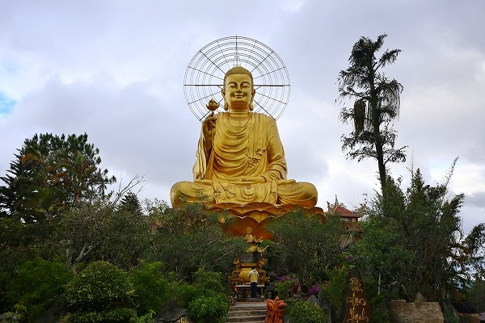
寺の名はヴァンハン寺。
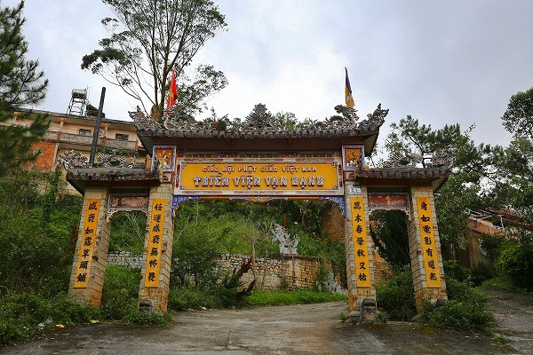
ベトナムの仏教寺院は他のインドシナ半島と違って歴史的に中国の影響を色濃く受けた、いわゆる
大乗仏教の寺が多い。
なので通常だとお寺の名前も漢字で表記されている場合が多いのだが、この寺はそういうの無かったですね。
いや、単に見逃しただけかもしれないが、ここではヴァンハン寺と記述させていただきますよ。
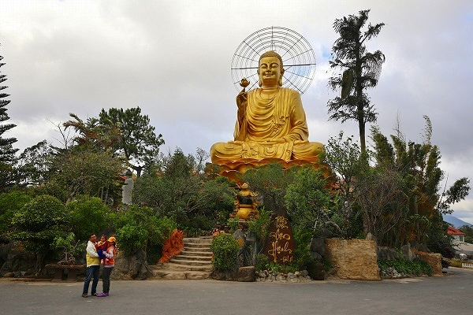
繰り返すが、ロケーションは市街を見下ろす丘の上。
訪れるのも参拝客、というよりは眺望を楽しみに来ている人が多かったような気がする。
いや、ほとんど来客がいないので良く判らないのだが。
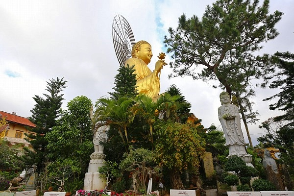
余談だが、ベトナムでは他の東南アジア同様、配車サービスは
Grabを利用することになる。
正直言ってUberの方がはるかに使い勝手が良いのだが、東南アジアからはUberが撤退してしまったのでGrabを利用するしかない。
それでもタクシーより安いし安全だし安心だ。
閑話休題
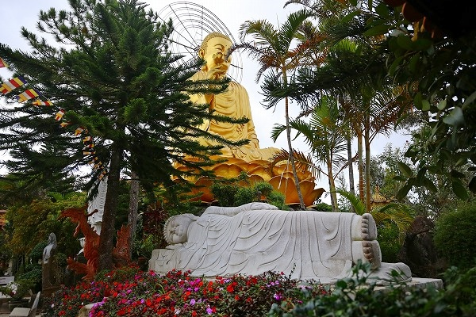
大仏さんの前には展望スペースがあり、そこからはダラットの街が良く見渡せる。
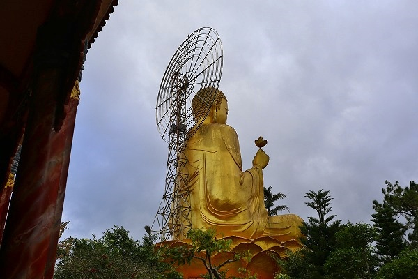
大仏さんの背後の光背は後から見るとシッカリ下から支えてあるんですね。
夜になったら光ったりするんだろうか。
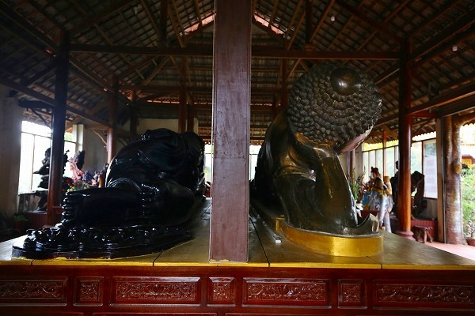
大仏さんの脇にあるお堂には大きな寝釈迦さんが二体背中合わせに寝ころんでいた。
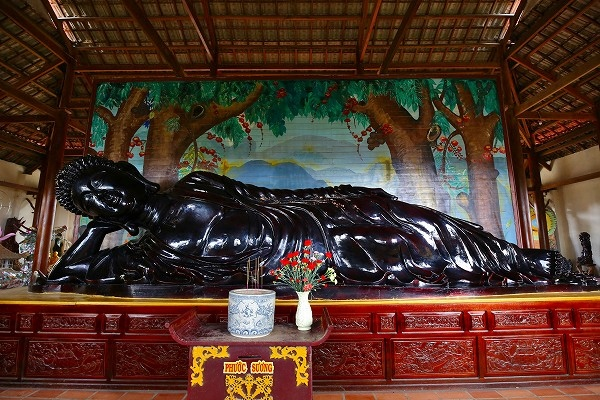
片方は木製、片方は銅製だった。
このように背中合わせに寝釈迦が横たわっているのは初めて見た。
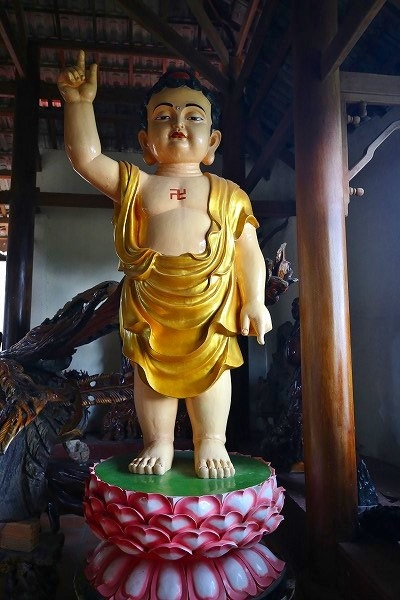
堂内にあった天上天下唯我独尊像。
つまりお釈迦様生誕の図です。
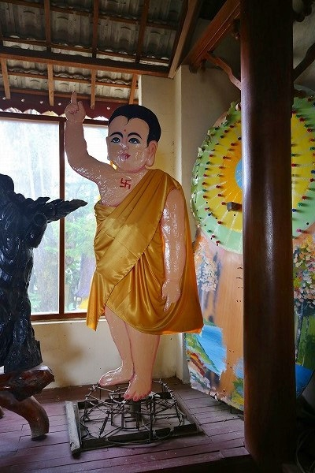
こちらも天上天下唯我独尊像。
平らなパネルだったが、何とも言えない味わいがあって印象深かった。
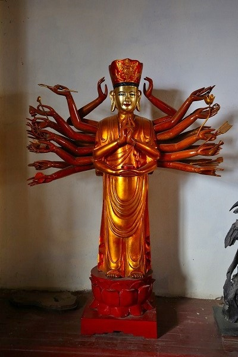
他にも千手観音や
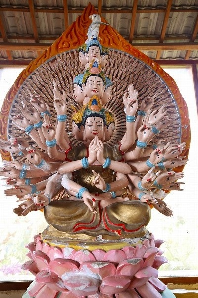
千手千眼観音などもあり、見どころ尽きない寺であった。
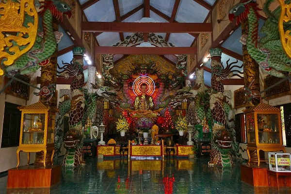
本堂内部。
妙に龍が多い本堂だったが、本尊はシッカリネオンの光背に彩られておりました。
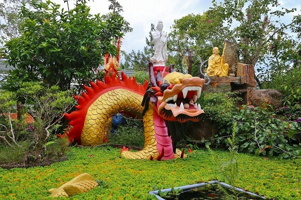
本堂前の池にあった龍。
池はびっしり水藻で覆われていて近づくまで池とは判らなかった。
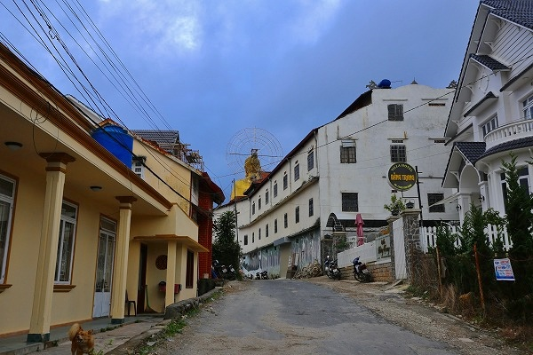
帰りはGrabも捕まらないのでトボトボと歩くことにした。
市街地まで3キロほど。下り道だったのでそんなに疲れずに歩けた。
ただ、街に着いた頃にはすっかり日が暮れていた。
結論として大仏さんより2体の天上天下唯我独尊像が印象的だったよ。
次へGO！